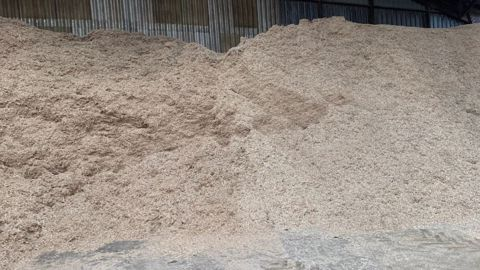
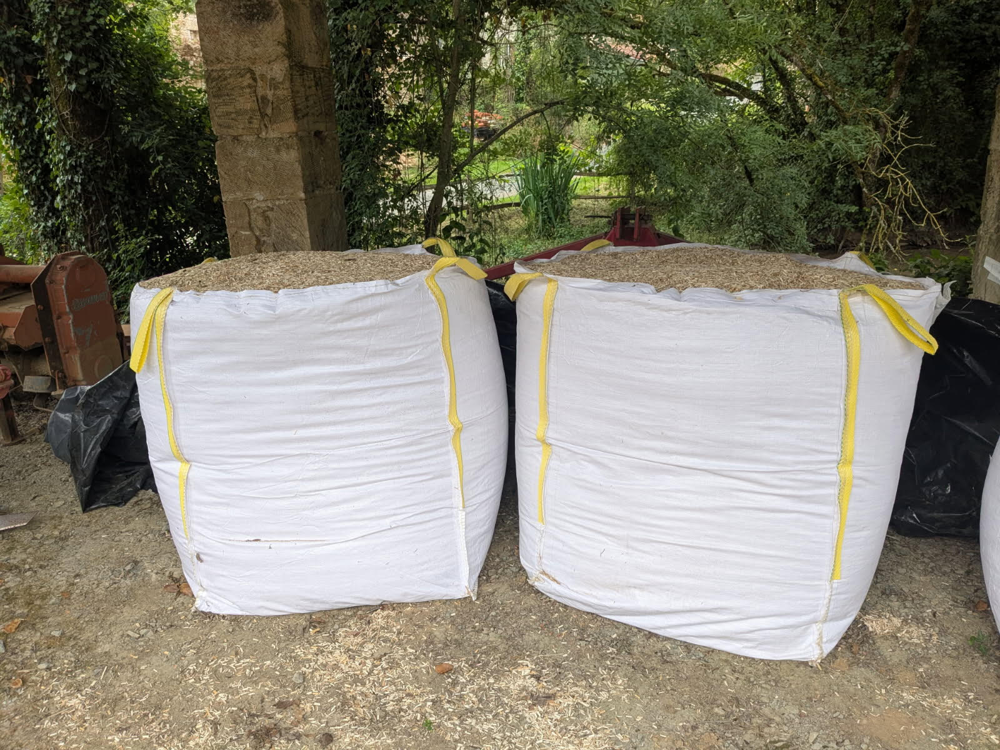
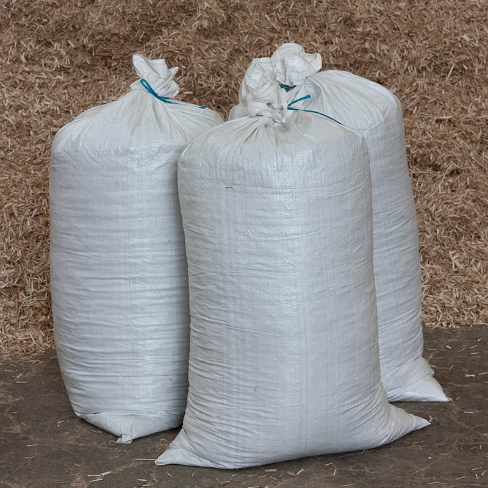
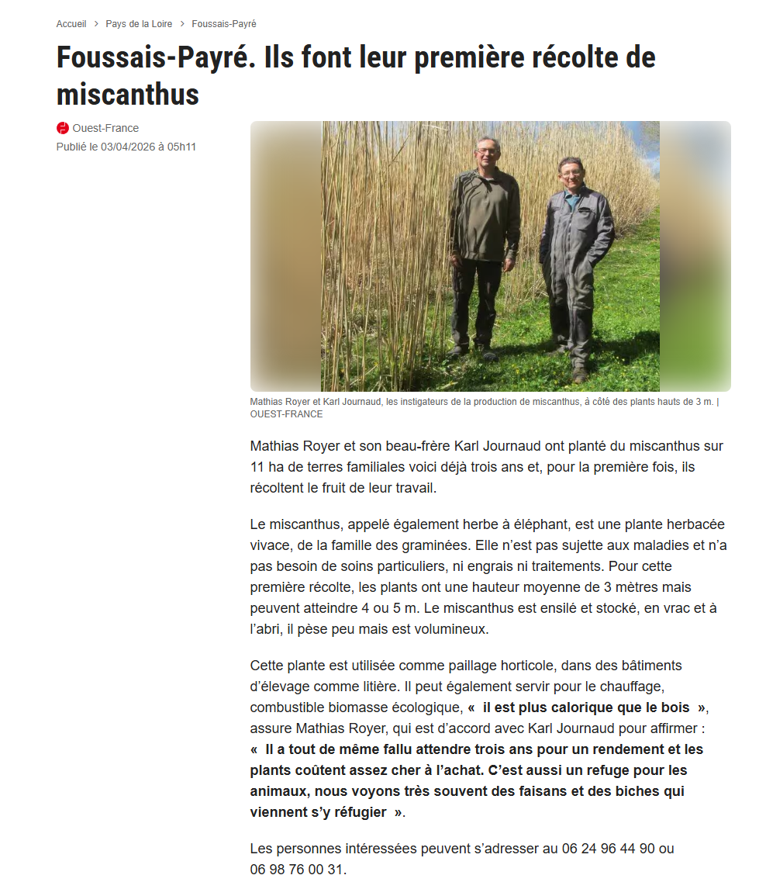

Pourquoi choisir le miscanthus ?
💧 Économie d'eau
Réduit fortement les besoins d'arrosage.
🌱 Naturel
Produit local sans pesticides.
🛡️ Protection
Protège les plantations été comme hiver.
♻️ Durable
Longue tenue et entretien réduit.
Nos conditionnements
Vrac
40 €/m³
Note : Prix dégressif suivant la quantité commandée

Livraison possible
Devis sur demande
Big Bag
50 €/m³
Note : Prix dégressif suivant la quantité commandée

Livraison possible
Devis sur demande
Sac 18 kg
15 €
Note : Prix dégressif suivant la quantité commandée

Livraison possible
Devis sur demande
Merci à Ouest-France !

Source : Article Ouest-France